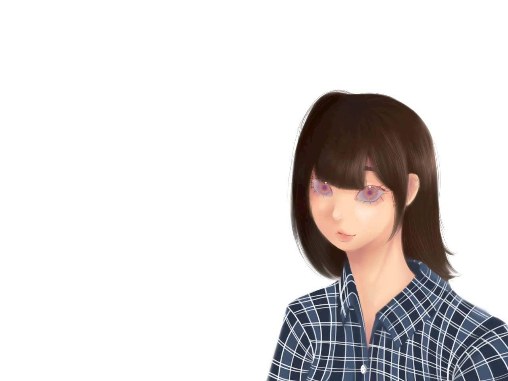

About Me
ทำความรู้จักฉันให้มากขึ้น ผ่านเรื่องราว ความสนใจ และสิ่งที่ฉันชอบ

Personal Information
ห้องวิทย์คอม
My Story
ฉันเป็นคนที่ชอบเรียนรู้สิ่งใหม่ ๆ
และสนุกกับการได้ลองทำสิ่งที่ไม่คุ้นเคย
ฉันชอบทั้งงานที่ใช้ความคิดสร้างสรรค์
เช่น การวาดรูป การออกแบบ
และการสร้างโมเดล 3 มิติ
รวมถึงงานที่ต้องใช้การคิดวิเคราะห์
การคำนวณ และการแก้ปัญหา
สิ่งหนึ่งที่ฉันให้ความสำคัญคือ
“อิสระในการเรียนรู้”
ฉันชอบค้นหาวิธีของตัวเอง
ทดลองสิ่งใหม่
และเผชิญกับความท้าทาย
ที่ช่วยให้ตัวเองพัฒนาไปได้ไกลกว่าเดิม
Interests
Drawing
วาดรูปและสร้างงานศิลปะ
3D Design
สนุกกับการออกแบบโมเดล 3 มิติ
Calculation
ชอบการคำนวณและแก้โจทย์
Gaming
ชอบเกมที่มีระบบ กลยุทธ์ และความท้าทาย
Learning
สนุกกับการค้นหา และเรียนรู้สิ่งใหม่
Freedom
ชอบพื้นที่ที่เปิดโอกาส ให้คิดและทดลองอย่างอิสระ
Drawing
การวาดรูปเป็นหนึ่งในสิ่งที่ฉันชอบมากที่สุด เพราะทำให้ฉันสามารถถ่ายทอดความคิด จินตนาการ และสไตล์ของตัวเองออกมาเป็นภาพ ฉันสนุกกับทั้งการสเก็ตช์ตัวละคร การลงสีดิจิทัล และการทดลองรูปแบบการวาดที่หลากหลาย

My Drawing Journey
ฉันชอบวาดตัวละครและทดลองสร้างผลงาน ในหลายรูปแบบ ตั้งแต่งานเส้นแบบง่าย ๆ ไปจนถึงงานลงสีและออกแบบตัวละครดิจิทัล
สำหรับฉัน การวาดรูปไม่ใช่แค่การทำภาพให้สวย แต่เป็นพื้นที่สำหรับฝึกสังเกต ฝึกความละเอียด และถ่ายทอดสิ่งที่คิดออกมาในแบบของตัวเอง
🎨 Drawing • Digital Art • Character DesignDrawing Gallery
รวมผลงานวาดดิจิทัลของฉัน คลิกที่รูปเพื่อดูภาพขนาดเต็ม